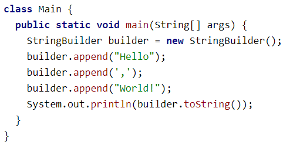
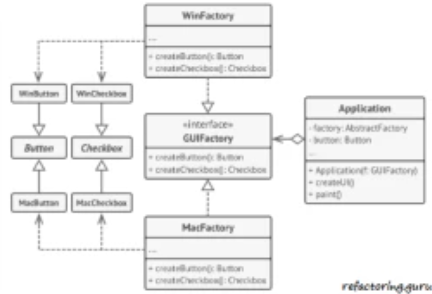
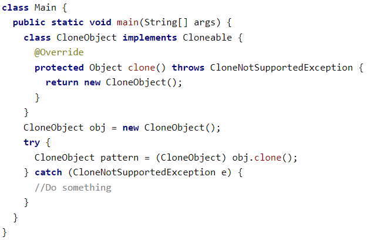

Java
Порождающие паттерны (creational patterns)
Начнём с начала жизненного цикла объектов — с создания объектов. Порождающие шаблоны как раз и помогают создавать объекты удобнее, обеспечить гибкость этого процесса.
Одним из самых известных является "Строитель" (Builder). Данный паттерн позволяет создавать сложные объекты пошагово. В Java самый известный пример — StringBuilder:
Другим известным подходом к созданию объекта — вынос создания в отдельный метод. Такой метод как бы становится фабрикой объектов. Поэтому и шаблон называется "Фабричный метод" (Factory Method).
В Java, например, его действие можно увидеть на примере класса java.util.Calendar. Сам класс Calendar абстрактный, а чтобы его создавать используется метод getInstance:

Часто это обусловлено тем, что логика создания объекта может быть непростой. Например, в случае выше, мы обращаемся к базовому классу Calendar, а создаётся класс GregorianCalendar. Если мы посмотрим в конструктор, то увидим, что в зависимости от условий создаются разные реализации Calendar.
Но иногда одного фабричного метода мало. Иногда требуется создавать разные объекты так, чтобы они друг с другом сочетались. В этом нам поможет другой шаблон - "Абстрактная фабрика" (Abstract factory).
И тогда нам требуется создавать разные фабрики в одном месте. При этому плюсом является то, что нам не важны детали реализации, т.е. не важно, какую конкретно фабрику мы получим. Главное, чтобы она создавала правильные реализации. Супер пример:
То есть в зависимости от окружения (от операционной системы) мы получим определённую фабрику, которая создаст совместимые элементы.
Как альтернатива подхода к созданию через кого-то, мы можем воспользоваться паттерном "Прототип". Суть его проста — новые объекты создаются по образу и подобию уже существующих объектов, т.е. по их прототипу. В Java с этим паттерном сталкивался каждый — это использование интерфейса java.lang.Cloneable:
Как видно, вызывающий не знает, как устроен метод clone. То есть создание объекта по прототипу — обязанность самого объекта. Это полезно потому, что не завязывает использующего на реализацию объекта-шаблона.
Ну и самый последний в этом списке — паттерн "Одиночка" (Singleton).